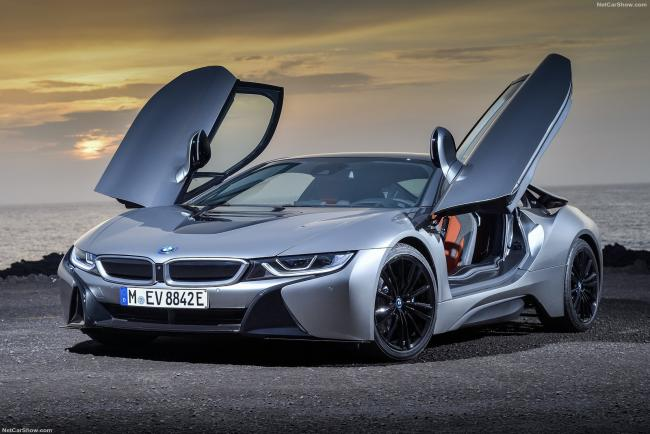
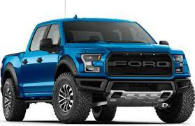

La Tunisie a toujours été la destination de milliers de touristes venant du monde entier pour y passer leurs vacances et ils n’ont pas tort. La Tunisie séduit, envoute et ensorcelle. Des plages comme on en voit rarement. Des mers cristallines ressemblant à de gigantesques piscines où l’on arrive à voir clairement les petits poissons nageant entre les pieds des baigneurs. Un soleil réchauffant les corps et les cœurs auquel les gens s’abandonnent pendant leurs séances de bronzette. La Tunisie ne se limite pas aux plages au sable blanc. C’est tout un patrimoine culturel et historique qu’elle compte à son actif : Des ports puniques, des sites archéologiques et des ports de plaisance et plus encore. Tant de choses à voir se trouvant dans les quatre coins du pays. C’est pourquoi la voiture de location se trouve être le meilleur moyen pour se déplacer rapidement et faire le maximum de sites dans le pays du soleil.
Des vacances de rêve. Sans la contrainte du transport. Voilà ce que notre agence de location de voitures vous propose. Disposant d’un grand parc automobile réunissant toutes sortes de véhicules de location : premiums, citadines, utilitaires et voitures de luxe, Avantgarde arrive à satisfaire une clientèle des plus exigeantes. Nous accordons la plus grande importance aux horaires de livraisons et à l’état de nos voitures de location. Nous veillons toujours à leur bon entretien. C’est ce qui fait le fort d’Avantgarde. Vous pouvez avoir votre devis de location de voiture et faire la réservation de votre véhicule en ligne. Nous nous chargeons de tout planifier et de vous livrer votre véhicule. Ou, si vous préférez, vous pouvez vous adresser à notre agence située au sein de l’aéroport de Tunis Carthage et louer le véhicule que vous souhaitez sur place.
 Règles de la route: .Un permis de conduire français en cours de validité en plus du permis international .Il n'est pas autorisé de circuler avec la voiture de location en dehors des frontières tunisiennes. Comme en France, le trafic se déroule sur la droite. La vitesse est limitée à 50 km/h en agglomération et à 80 à 90 km/h hors agglomération, 110 km/h sur les autoroutes. Le port de la ceinture de sécurité est recommandé à tous les passagers. le taux d'alcoolémie est de 0,00 g/l. L'utilisation d'un téléphone portable tenu en main pendant la conduite est à déconseiller. La circulation routière de nuit est absolument déconseillé
Péages et stations-service Il existe un système de péage dit ouvert et un péage à système fermé sur l'autoroute A1 reliant Tunis à Sfax. Le paiement est effectué à chaque barrière, le prix est variable (dépend du type de véhicule). Les autoroutes A4 reliant la capitale à Bizerte et A3 reliant Tunis au village Oued Zarga sont également payantes. Des stations-service sont réparties sur l'ensemble du territoire. Âge requis L'âge minimum autorisé pour louer et conduire une voiture en Tunisie est de 21 ans (variable selon les loueurs et les catégories de voiture). De plus, le conducteur doit être en possession de son permis de conduire depuis au moins 2 ans. Les conducteurs de moins de 25 ans seront facturés de frais jeune conducteur à payer chez le loueur au moment de la prise en charge du véhicule. Il est fortement recommandé de se munir d'un permis de conduire international en plus du permis français. Pour plus d'informations,